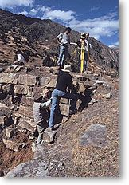

The Stanford Chavín Project
|  The theodolite team at work. |
The final product of the project will integrate all aspects of this research. A three-dimensional computer model based on exterior and interior architectural data will link with the virtual reality panoramas and video documentation for each area of the site. Together they will form a "virtual fieldsite" or "hypothesis tester," with which people can walk through a virtual Chavín, making observations, forming hypotheses about the construction of the site, its astronomical alignments, and yet-unknown aspects of the site, and then test them with the precise measuring capabilities of the site model.The model will be widely available on CD-ROM to archaeologists and the wider public.
In the meantime, a CD-ROM of panoramic images of Chavin (including quite a number not included on this web site) and other Andean sites is available. Contact John Rick by email at johnrick@stanford.edu